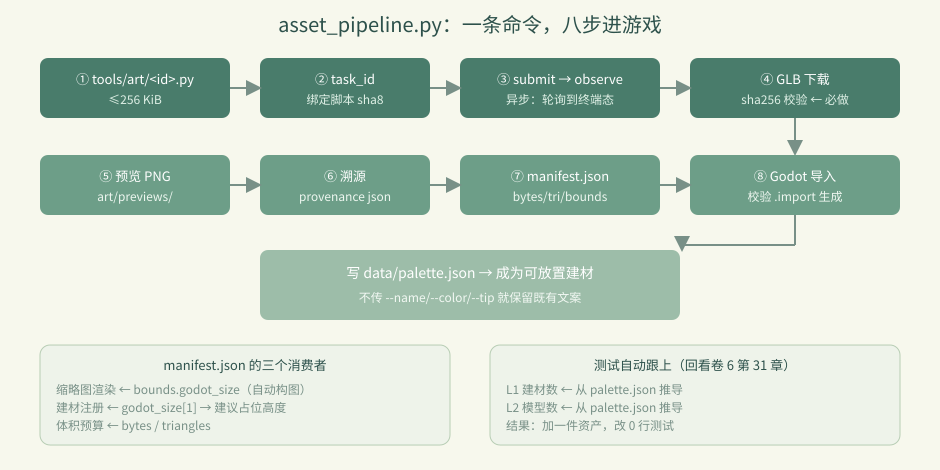
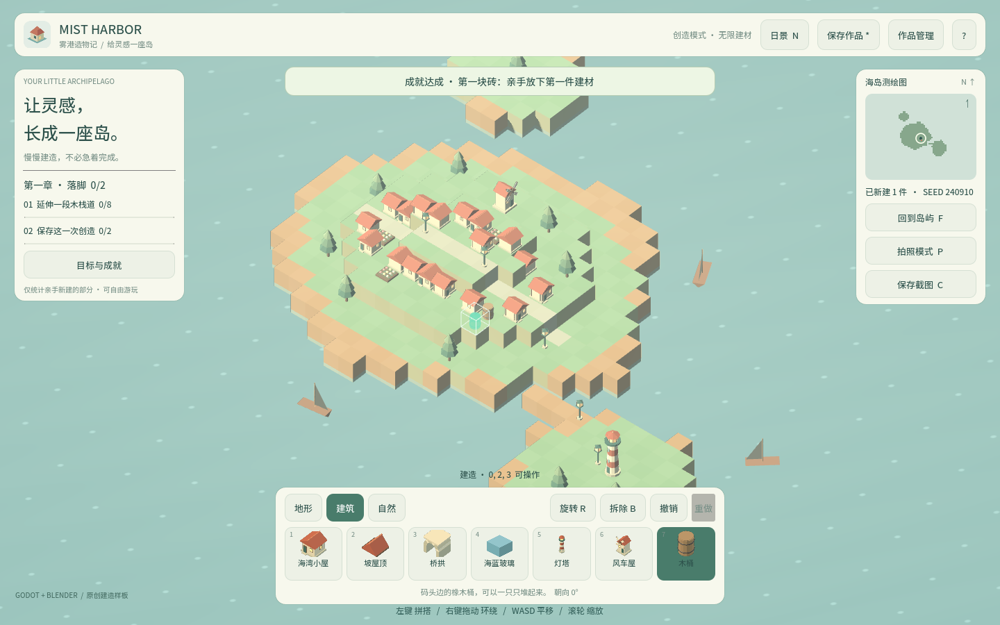
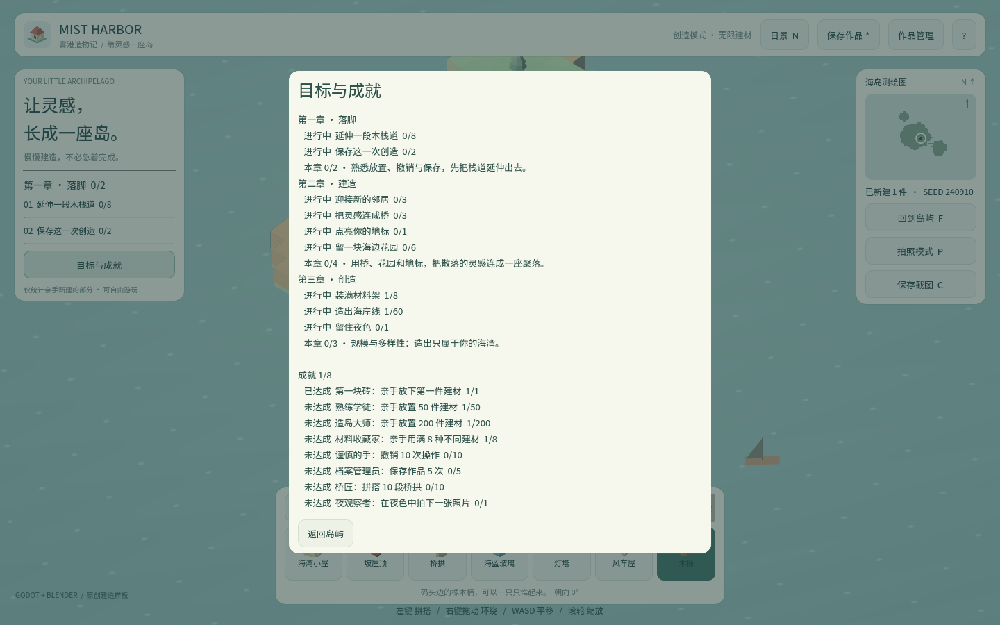

卷 3 · 第 16 章 asset_pipeline.py：一条命令，从脚本到可放置建材
本章目标：读通"造资产 → 进游戏"的自动化主线，
理解每一步为什么存在，以及溯源（provenance）为什么是商业项目的必需品。
对应任务：T12 / T13 | 对应文件：tools/asset_pipeline.py
16.1 一条命令
python tools/asset_pipeline.py build --id barrel --name 木桶 --category 建筑 \
--color b07d4f --tip "码头边的橡木桶，可以一只只堆起来。"
python tools/asset_pipeline.py list # 看全部资产与是否已注册常用开关：--no-register（只出资产不注册）/ --no-import（不跑 Godot 导入）/--retry（换任务 id 重跑）/ --timeout（默认 300 秒）/ --height（占位格数）。
16.2 八步主线
① 读 tools/art/<id>.py，检查 ≤256 KiB
② 算任务 id（绑定脚本摘要）
③ blender_submit → 轮询 observe → artifacts
④ 下载 GLB（sha256 校验）→ 写 assets/models/<id>.glb
⑤ 预览 PNG → art/previews/<id>.png
⑥ 写溯源 art/provenance/<id>.json
⑦ 更新 assets/models/manifest.json（bytes / triangles / bounds）
⑧ Godot headless 导入（校验 .import 真的生成）→ 写 data/palette.json
16.3 为什么要写 manifest.json
"assets": [{ "id": "barrel", "bytes": 44580, "triangles": 632,
"bounds": { "godot_size": [0.614, 0.72, 0.614] }, ... }]它有三个消费者：
| 消费者 | 用哪个字段 |
|---|---|
| --- | --- |
| 缩略图渲染 | bounds.godot_size → 自动构图（第 13 章） |
| 建材注册 | godot_size[1] → 建议占位高度 ceil(h) |
| 体积预算 | bytes / triangles → 控制包体与面数 |
📌 一句话：manifest 是"资产的体检报告"，让后续环节不必重新解析 GLB。
16.4 为什么要写 provenance
{ "id": "barrel", "version": 2, "task_id": "mist-harbor-barrel-v2-a52aa92e",
"script": "tools/art/barrel.py", "script_sha256": "...", "glb_sha256": "...",
"bytes": 44580, "triangles": 632, "generated_at": "2026-09-15T..." }它回答"这个二进制是哪来的"：
哪版脚本、哪个任务、什么时候、校验值是什么。
对商业项目的意义：
- 出问题能追溯到脚本版本，而不是对着二进制猜
- 换机器/换人重建，能验证产物一致（sha256 相同）
- 审计与版权存证
📌 二进制入库而没有溯源，是资产管线的头号技术债。
16.5 注册建材：只覆盖调用方给的值
register_palette(args.id, args.name, args.category, args.color, height, args.tip, suggested_height)设计要点：--name / --color / --tip 不传就保留既有值。
这样重跑管线（比如换了建模脚本）不会把已经调好的中文名和提示文案冲掉——
重跑只更新几何，不动文案。
suggested_height 由 bounds 推导：max(1, ceil(godot_size[1]))，
即"模型有多高就占几格"。
16.6 与测试的衔接（回看卷 6）
管线在 ⑧ 之后，第 31 章那三条"写死数量"的断言自动成立：
palette.json多一项 → L1 从palette.json推导建材数 ✅manifest.json多一项、GLB 多一个 → L2 从palette.json推导模型数 ✅- L3 同理 ✅
这就是"数据源驱动"的复利：加一件资产，改 0 行测试。
16.7 存量资产怎么办
现有 8 件资产来自 project/art/generate_harbor.py（整体重建式脚本，一次重建全部）。
迁移策略：
- 为每件资产写一个
tools/art/<id>.py（按第 14 章契约） - 走管线：
build --id <id>逐件替换 - 用
list确认 manifest 与 palette 一致 - 保留
generate_harbor.py作为"批量参考实现"，不再作为主路径
🌩 在云端 agent（web-cb）里是什么样
| 🖥 本地路线 | 🌩 云端 agent（web-cb） | |
|---|---|---|
| --- | --- | --- |
| 管线本身 | tools/asset_pipeline.py | 同一脚本，或平台内用 MCP 工具串起来 |
| 远程 Blender | HTTP 直连 | 平台原生调用（更快更稳） |
| Godot 导入 | 本地 4.7 headless | 平台内执行同命令（对齐 features） |
| 产物落盘 | 本地工程目录 | 平台工作区 → 需要同步回仓库 |
| 建议 | 本地跑通再提交 | 云端把"提交脚本 → 审核 GLB → 合并"做成流水线 |
🌩 云端最理想形态：只提交 .py 脚本，二进制由流水线生成并校验 sha256，
仓库里永远只有文本 + 溯源，没有"不知道怎么来的 GLB"。
16.8 常见坑速查（本章）
| 现象 | 原因 | 处理 |
|---|---|---|
| --- | --- | --- |
missing authoring script | 没写 tools/art/<id>.py | 先写脚本（第 14 章） |
| 任务 id 冲突 | 脚本没变却想重跑 | 改用 --retry |
Godot did not produce .import | 导入没真跑 | 检查 tools.json 引擎路径 |
| 加了资产测试仍红 | 断言写死数量 | 见第 31 章（从 palette 推导） |
| 文案被重置 | 重跑传了 --name/--tip | 不传就保留既有值 |
| 占位高度不对 | bounds 没更新 | 检查 manifest 是否被写入 |
16.9 本章作业
- 按序列出管线八步，指出哪一步会"校验"、校验的是什么
- 说出
manifest.json的三个消费者各自用哪个字段 - 解释为什么重跑管线时"不传
--name就保留既有文案"是好设计 - 选一件存量资产（例如
lamp），写出迁移到tools/art/lamp.py的要点清单（不用真写完整脚本）
🎓 教学提示（给教师 / 直播主）
- 概念锚点：自动化 = 把人工步骤固化成可重跑的命令；溯源 = 让二进制可解释。
- 课堂演示：现场跑一次
build --id barrel --no-register，看八步输出。 - 高频误解：学生觉得"GLB 能出来就行"。追问：三个月后你怎么知道它是哪个脚本产出的？
- 讨论题：二进制该不该入库？（本实训：入库 + 溯源 + 脚本可复现）
- 批改要点：作业 2 要答出缩略图 / 注册 / 预算三个消费者。
🖼 本章图集


📹 录屏分镜（10 分钟）
| 时间 | 画面 | 解说词要点 |
|---|---|---|
| --- | --- | --- |
| 00:00–01:20 | 一条命令 + 八步主线 | "从脚本到可放置建材。" |
| 01:20–03:00 | manifest 三个消费者 | "体检报告，供三个人用。" |
| 03:00–04:30 | provenance 内容逐字段 | "这个二进制是哪来的？" |
| 04:30–06:00 | 注册只覆盖传入值 | "重跑不动文案。" |
| 06:00–07:30 | 与卷 6 断言的衔接 | "加资产，改 0 行测试。" |
| 07:30–10:00 | 存量迁移策略 + 作业 |
🎬 视频位（待录制）
把录好的视频放到course/media/video/16/（mp4 / webm / mov），重新执行 python tools/course_build.py 即会自动内嵌；首帧默认用本章第一张截图作为封面。分镜脚本见上一节。🖼 配图清单
| 文件名 | 内容 | 生成方式 |
|---|---|---|
| --- | --- | --- |
16-island-with-barrel.png | 岛上有管线产出的木桶 | python tools/course_capture.py --chapter 16 |
16-progress-after.png | 完成任务进度后的面板 | 同上 |
🎥 直播脚本（L3 片段，12 分钟）
- 开场："你的仓库里有没有说不清来历的二进制？"
- 演示：跑一次完整 build（含 sha256 校验与 manifest 写入）
- 互动：让观众设计 provenance 还应该记什么（作者、许可、引擎版本？）
- 收尾：卷 3 小结 + 预告卷 4（玩法系统）
❓ 本章 FAQ
Q：能不能跳过 Godot 导入？
A：--no-import 可以，但那样 .import 不会生成，游戏里加载不到新资产。仅调试用。
Q：manifest 和 provenance 会进导出包吗？
A：manifest.json 在 assets/ 下会进包（运行时读 bounds）；art/provenance/ 属于 art/，被 export_presets.cfg 排除，不进包——它只服务开发。
Q：一次能加多件吗？
A：循环调用 build 即可；但建议一件一件验（预览图 + 游戏内效果），避免批量返工。